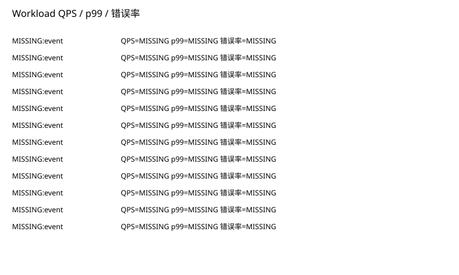
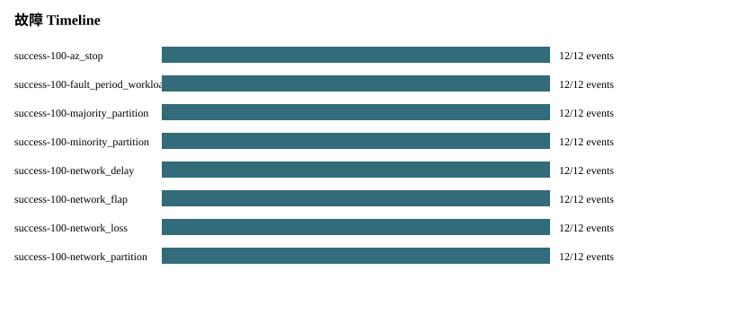
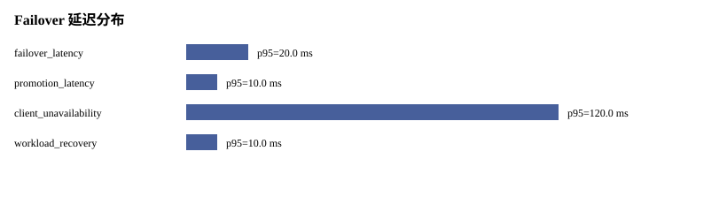
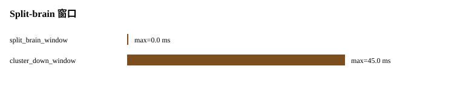
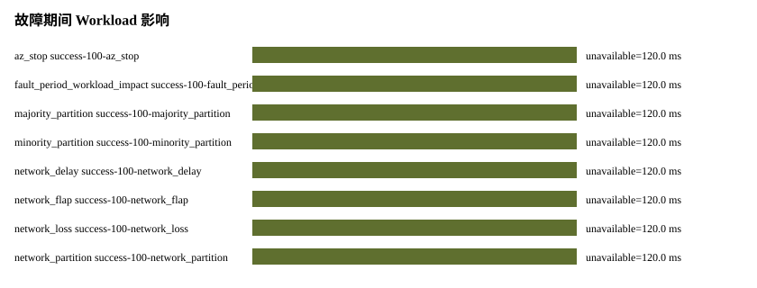
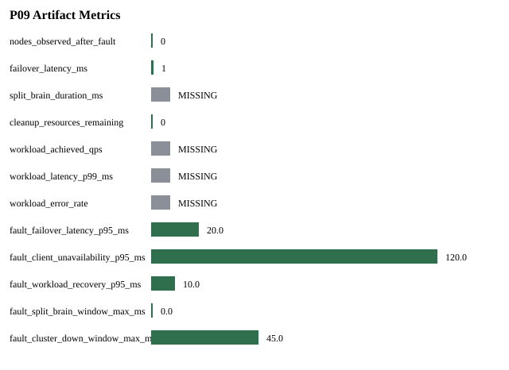

Status: PASS
Source phase: M1-S06
| 字段 | 值 |
|---|---|
| run_id | MISSING: run_id absent from run metadata |
| created_at | MISSING: created_at absent from run metadata |
| git_sha | MISSING: git_sha absent from run metadata |
| valkey_version | MISSING: valkey_version absent from run metadata |
| artifact_root | MISSING: artifact_root absent from run metadata |
| Name | Status |
|---|---|
| source_phase | PASS |
| real_valkey_evidence | SKIPPED_WITH_REASON |
| failover | SKIPPED_WITH_REASON |
| cleanup | PASS |
| setup_telemetry | SKIPPED_WITH_REASON |
| command_audit | SKIPPED_WITH_REASON |
| management_ops | SKIPPED_WITH_REASON |
| workload_benchmark | PASS |
| fault_timeline | PARTIAL |
| 指标 | 状态 | 原因 |
|---|---|---|
| command_log.total_commands | SKIPPED_WITH_REASON | Input artifacts did not include command_log.jsonl. |
| fault_timeline.promotion_latency_ms | MISSING | promotion_latency_ms cannot be derived because promotion_observed=SKIPPED_WITH_REASON: promotion_expected=false for this fault type |
| management.operation_count | SKIPPED_WITH_REASON | Management operation artifacts were not present. |
| promotion_latency_ms | MISSING | promotion_latency_ms cannot be derived because promotion_observed=SKIPPED_WITH_REASON: promotion_expected=false for this fault type |

| 阶段指标 | 耗时 ms |
|---|---|
| SKIPPED_WITH_REASON: 无可排序的阶段耗时 | |
| 节点 | ready ms | 角色 | 状态 |
|---|---|---|---|
| SKIPPED_WITH_REASON: 无慢节点样本 | |||
| 命令 | 操作 | 类型 | 耗时 ms | 状态 |
|---|---|---|---|---|
| SKIPPED_WITH_REASON: 无慢命令样本 | ||||
| 命令 | 操作 | 类型 | 耗时 ms | 状态 |
|---|---|---|---|---|
| none | ||||
| 命令 | 操作 | 类型 | 耗时 ms | 状态 |
|---|---|---|---|---|
| none | ||||
| 命令类型 | 数量 |
|---|---|
| SKIPPED_WITH_REASON: 无 command log 样本 | |
| 操作 | 耗时 ms | 状态 | 命令数 |
|---|---|---|---|
| SKIPPED_WITH_REASON: 无管理操作样本 | |||
| 操作 | known_nodes_delta | moved_slot_ranges | 状态 |
|---|---|---|---|
| SKIPPED_WITH_REASON: 无 topology diff 样本 | |||
覆盖 profile: ；全 slot 覆盖: False。该结论来自本地 workload artifact，不依赖 LLM 或外网。

| 压测 profile | 采集窗口 | 实际 QPS | p99 延迟 ms | 错误率 |
|---|---|---|---|---|
| MISSING | event | MISSING | MISSING | MISSING |
| MISSING | event | MISSING | MISSING | MISSING |
| MISSING | event | MISSING | MISSING | MISSING |
| MISSING | event | MISSING | MISSING | MISSING |
| MISSING | event | MISSING | MISSING | MISSING |
| MISSING | event | MISSING | MISSING | MISSING |
| MISSING | event | MISSING | MISSING | MISSING |
| MISSING | event | MISSING | MISSING | MISSING |
| MISSING | event | MISSING | MISSING | MISSING |
| MISSING | event | MISSING | MISSING | MISSING |
| MISSING | event | MISSING | MISSING | MISSING |
| MISSING | event | MISSING | MISSING | MISSING |

| 样本 | 观察事件数 | 缺失事件 |
|---|---|---|
| success-100-az_stop | 12 | none |
| success-100-fault_period_workload_impact | 12 | none |
| success-100-majority_partition | 12 | none |
| success-100-minority_partition | 12 | none |
| success-100-network_delay | 12 | none |
| success-100-network_flap | 12 | none |
| success-100-network_loss | 12 | none |
| success-100-network_partition | 12 | none |
| success-100-node_host_stop | 12 | none |
| success-100-primary_stop_failover | 12 | none |

| 指标 | p50 ms | p95 ms | max ms | 状态 |
|---|---|---|---|---|
| failover_latency | 20.0 | 20.0 | 20.0 | PASS |
| promotion_latency | 10.0 | 10.0 | 10.0 | PASS |
| client_unavailability | 120.0 | 120.0 | 120.0 | PASS |
| workload_recovery | 10.0 | 10.0 | 10.0 | PASS |

| 指标 | p95 ms | max ms | 状态 |
|---|---|---|---|
| split_brain_window | 0.0 | 0.0 | PASS |
| cluster_down_window | 45.0 | 45.0 | PASS |

| 故障类型 | 样本 | 客户端不可用 ms | workload 恢复 ms | 状态 |
|---|---|---|---|---|
| az_stop | success-100-az_stop | 120.0 | 10.0 | PARTIAL |
| fault_period_workload_impact | success-100-fault_period_workload_impact | 120.0 | 10.0 | PARTIAL |
| majority_partition | success-100-majority_partition | 120.0 | 10.0 | PASS |
| minority_partition | success-100-minority_partition | 120.0 | 10.0 | PASS |
| network_delay | success-100-network_delay | 120.0 | 10.0 | PARTIAL |
| network_flap | success-100-network_flap | 120.0 | 10.0 | PARTIAL |
| network_loss | success-100-network_loss | 120.0 | 10.0 | PARTIAL |
| network_partition | success-100-network_partition | 120.0 | 10.0 | PARTIAL |
| node_host_stop | success-100-node_host_stop | 120.0 | 10.0 | PARTIAL |
| primary_stop_failover | success-100-primary_stop_failover | 120.0 | 10.0 | PASS |
